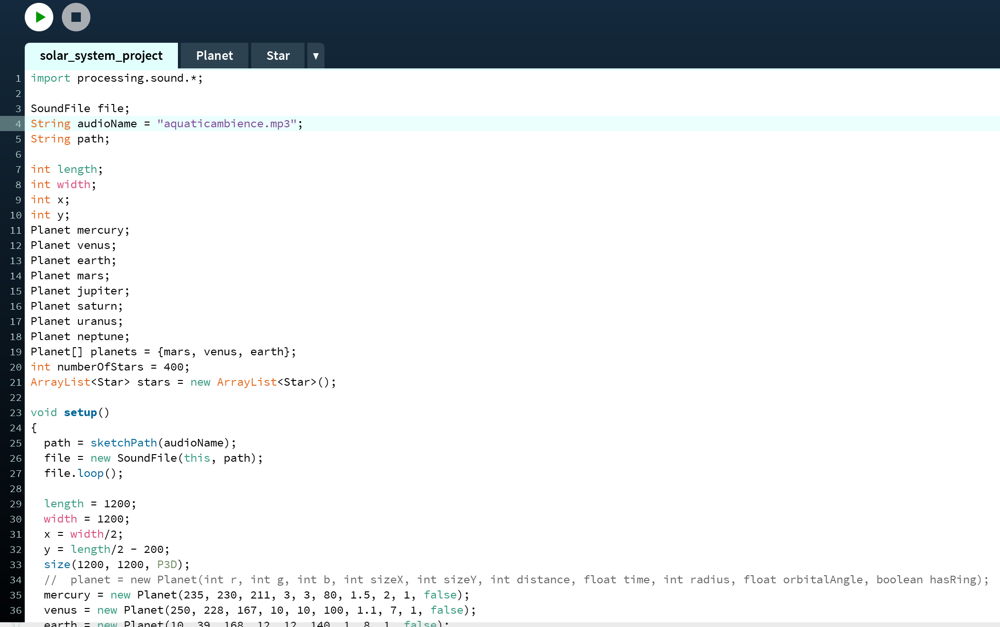
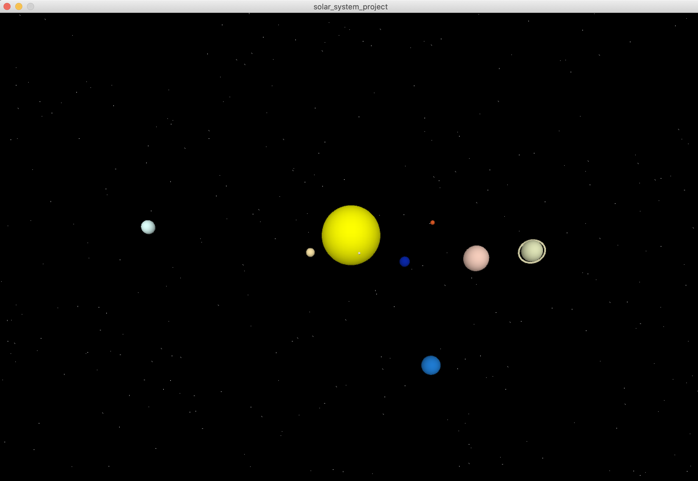

Etienne MustowHey, my name's Etienne but a lot of people call me Eti. I first started coding at a web development bootcamp in 2017 and later started working as a web developer. I wanted to pursue a degree but due to other commitments I wasn't able to so applied to City due to some of the great support and resources! |
||
|
|
||
Bootcamp 2020: Soothing Solar SystemMy first programming project, concluding the 2 week Programming Bootcamp at City (2020). This Processing project demonstrates a collective understanding of the use of array lists, loops, randomness, classes, objects, 2D/3D transformations and the sound library. I created a model of our solar system with a soothing track playing in the background. The stars were randomly generated hundred of times in a for loop. As for the planets, I initially created a centered sphere via transformation. Then using a Planet class, and a constructor with a lot of arguments, detailed out each planet according to its distance from the sun, colour, size, and speed of orbit. The planet's draw method included some maths to generate the circular motion and the setting of the ring for Saturn. The backing track was added to fit the theme of "calms my nerves". Check out the code on Github here! | ||
|   | ||